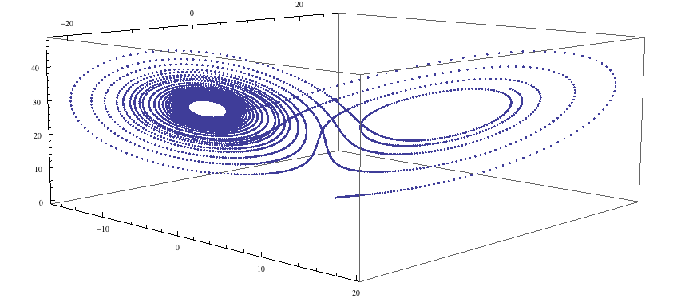

Quickstart Tutorial¶
In this tutorial, we will create an XMDS2 script to solve the Lorenz Attractor, an example of a dynamical system that exhibits chaos. The equations describing this problem are
where we will solve with the parameters \(\sigma=10\), \(\rho=28\), \(\beta = \frac{8}{3}\) and the initial condition \(x(0) = y(0) = z(0) = 1\).
Below is a script that solves this problem (it’s also saved as examples/lorenz.xmds in your XMDS2 directory). Don’t worry if it doesn’t make sense yet, soon we’ll break it down into easily digestible parts.
<?xml version="1.0" encoding="UTF-8"?>
<simulation xmds-version="2">
<name>lorenz</name>
<!-- While not strictly necessary, the following two tags are handy. -->
<author>Graham Dennis</author>
<description>
The Lorenz Attractor, an example of chaos.
</description>
<!--
This element defines some constants. It can be used for other
features as well, but we will go into that in more detail later.
-->
<features>
<globals>
<![CDATA[
real sigma = 10.0;
real b = 8.0/3.0;
real r = 28.0;
]]>
</globals>
</features>
<!--
This part defines all of the dimensions used in the problem,
in this case, only the dimension of 'time' is needed.
-->
<geometry>
<propagation_dimension> t </propagation_dimension>
</geometry>
<!-- A 'vector' describes the variables that we will be evolving. -->
<vector name="position" type="real">
<components>
x y z
</components>
<initialisation>
<![CDATA[
x = y = z = 1.0;
]]>
</initialisation>
</vector>
<sequence>
<!--
Here we define what differential equations need to be solved
and what algorithm we want to use.
-->
<integrate algorithm="ARK89" interval="20.0" tolerance="1e-7">
<samples>5000</samples>
<operators>
<integration_vectors>position</integration_vectors>
<![CDATA[
dx_dt = sigma*(y-x);
dy_dt = r*x - y - x*z;
dz_dt = x*y - b*z;
]]>
</operators>
</integrate>
</sequence>
<!-- This part defines what data will be saved in the output file -->
<output format="hdf5" filename="lorenz.xsil">
<sampling_group initial_sample="yes">
<moments>xR yR zR</moments>
<dependencies>position</dependencies>
<![CDATA[
xR = x;
yR = y;
zR = z;
]]>
</sampling_group>
</output>
</simulation>
You can compile and run this script with XMDS2. To compile the script, just pass the name of the script as an argument to XMDS2.
$ xmds2 lorenz.xmds xmds2 version 2.1 "Happy Mollusc" (r2680) Copyright 2000-2012 Graham Dennis, Joseph Hope, Mattias Johnsson and the xmds team Generating source code... ... done Compiling simulation... ... done. Type './lorenz' to run.
Now we can execute the generated program ‘lorenz’.
$ ./lorenz Sampled field (for moment group #1) at t = 0.000000e+00 Sampled field (for moment group #1) at t = 4.000000e-03 Current timestep: 4.000000e-03 Sampled field (for moment group #1) at t = 8.000000e-03 Current timestep: 4.000000e-03 ... many lines omitted ... Current timestep: 4.000000e-03 Sampled field (for moment group #1) at t = 1.999600e+01 Current timestep: 4.000000e-03 Sampled field (for moment group #1) at t = 2.000000e+01 Current timestep: 4.000000e-03 Segment 1: minimum timestep: 9.997900e-06 maximum timestep: 4.000000e-03 Attempted 7386 steps, 0.00% steps failed. Generating output for lorenz
The program generated by XMDS2 has now integrated your equations and produced two files. The first is the XML file “lorenz.xsil”, which contains the all the information used to generate the simulation (including the XMDS2 code) and the metadata description of the output. The second file is named “lorenz.h5”, which is a HDF5 file containing all of the output data. You can analysing these files yourself, or import them into your favourite visualisation/postprocessing tool. Here we will use the example of importing it into Mathematica. We run the included utility ‘xsil2graphics2’.
$ xsil2graphics2 -e lorenz.xsil xsil2graphics2 from xmds2 version 2.1 "Happy Mollusc" (r2680) Generating output for Mathematica 6+. Writing import script for 'lorenz.xsil' to 'lorenz.nb'.
This has now generated the file ‘lorenz.nb’, which is a Mathematica notebook that loads the output data of the simulation. Loading it into Mathematica allows us to plot the points {xR1, yR1, zR1}:
ll = Transpose[{xR1, yR1, zR1}]; ListPointPlot3D[ll]

…and we see the lobes of the strange attractor. Now let us examine the code that produced this simulation.
First, we have the top level description of the code.
<?xml version="1.0" encoding="UTF-8"?>
<simulation xmds-version="2">
<name>lorenz</name>
<!-- While not strictly necessary, the following two tags are handy. -->
<author>Graham Dennis</author>
<description>
The Lorenz Attractor, an example of chaos.
</description>
One of the advantages of an XML format is that these tags are almost entirely self-explanatory. XMDS2 files follow full XML syntax, so elements can be commented out using the <!-- and --> brackets, and we have an example of that here.
The first line, <?xml ...>, just specifies the encoding and XML version. It is optional, but its presence helps some text editors perform the correct syntax highlighting.
The <simulation> element is mandatory, and encloses the entire simulation script.
The <name> element is optional, but recommended. It defines the name of the executable program that will be generated, as well as the default name of the output data files (although this can be over-ridden in the <output> element if desired). If <name> is not present, it will default to the filename of the script.
The next element we have used can be skipped entirely if you wish to use the default set of features and you don’t want to define any global constants for your simulation.
<features>
<globals>
<![CDATA[
real sigma = 10.0;
real b = 8.0/3.0;
real r = 28.0;
]]>
</globals>
</features>
The <features> element can be used to choose a large number of features that will be discussed later, but here we have only used it to define a <globals> element. This element contains a block of text with <![CDATA[ at the start and ]]> at the end. These ‘CDATA’ blocks are used in several places in an XMDS script, and define a block of text that will be pasted directly into the generated C-code. They must therefore be formatted in legal C-syntax, and any legal C-syntax can be used. The <globals> element is placed at the top of the generated code, and can therefore be used to define any variables used in any other part of the simulation. Here we have defined our three real parameters. It is also possible to define variables that can be passed into the program at run-time, an example of which is given in the Wigner Function worked example.
The next element is the essential <geometry> element.
<geometry>
<propagation_dimension> t </propagation_dimension>
</geometry>
This element is used to define all the dimensions in the problem. We only require the time dimension, which we are labelling ‘t’, so this is a trivial example. We will discuss transverse dimensions in more detail in the next worked example (The nonlinear Schrödinger equation), where we deal with the integration of a partial differential equation rather than ordinary differential equations.
Next, we have the <vector> element.
<vector name="position" type="real">
<components>
x y z
</components>
<initialisation>
<![CDATA[
x = y = z = 1.0;
]]>
</initialisation>
</vector>
We can define multiple vectors, but here we only need the variables that we wish to integrate. We named this vector “position”, as it defines the position in phase space. These variables are real-valued (as opposed to, say, complex numbers), so we define type="real". The <components> element defines the names of the elements of this vector, which we have called ‘x’, ‘y’ and ‘z’. Finally, we provide the initial values of the variables in a CDATA block within the <initialisation> element.
Now we come to the heart of the simulation, where we define the evolution of our vector. This evolution is held in the <sequence> element, which contains an ordered sequence of actions upon any defined vectors. Vectors can be altered with a <filter> element, or integrated in the propagation dimension with an <integrate> element.
<sequence>
<integrate algorithm="ARK89" interval="20.0" tolerance="1e-7">
<samples>5000</samples>
<operators>
<integration_vectors>position</integration_vectors>
<![CDATA[
dx_dt = sigma*(y-x);
dy_dt = r*x - y - x*z;
dz_dt = x*y - b*z;
]]>
</operators>
</integrate>
</sequence>
Here our sequence consists of a single <integrate> element. It contains several important pieces of information. At the heart, the <operators> element contains the equations of motion as described above, written in a very human-readable fashion. It also contains an <integration_vectors> element, which defines which vectors are used in this integrate block. We have only one vector defined in this simulation, so it is a trivial choice here.
All integrate blocks must define which algorithm is to be used - in this case the 8th (embedded 9th) order adaptive Runge-Kutta method, called “ARK89”. The details of different algorithms will be described later (FIXME: Link!), but for now all we need to know is that this algorithm requires a tolerance, and that smaller means more accurate, so we’ll make it \(10^{-7}\) by setting tolerance="1.0e-7". Finally, any integration will proceed a certain length in the propagation dimension, which is defined by the “interval” variable. This integrate block will therefore integrate the equations it contains with respect to the propagation dimension (‘t’) for 20.
The <samples> element says that the values of the output groups will be sampled 5000 times during this interval. The nature of the output is defined in the last element in the simulation: the <output> element.
<output format="hdf5" filename="lorenz.xsil">
<sampling_group initial_sample="yes">
<moments>xR yR zR</moments>
<dependencies>position</dependencies>
<![CDATA[
xR = x;
yR = y;
zR = z;
]]>
</sampling_group>
</output>
The two top-level arguments in the <output> element are “format” and “filename”. Here we define the output filename, although it would have defaulted to this value. We also choose the format to be HDF5, which is why the simulation resulted in the binary file “lorenz.h5” as well as “lorenz.xsil”. If we had instead said format="ascii", then all of the output data would have been written in text form in “lorenz.xsil”.
The <output> element can contain any non-zero number of <sampling_group> elements, which specify the entire output of the program. They allow for subsampling, integration of some or all of the transverse dimensions, and/or conversion of some dimensions into Fourier space, but these will be described in more detail in the following examples. We have a <dependencies> element that specifies which vectors are needed for this output. We specify the list of output variables with a <moments> element, and then define them in CDATA block. In this case, we are simply defining the three variables that define our phase space.
And that’s it. This is quite a large framework to integrate three coupled ordinary differential equations, but the advantage of using XMDS2 is that vastly more complicated simulations can be performed without increasing the length or complexity of the XMDS2 script significantly. The Worked Examples section will provide more complicated examples with stochastic equations and partial differential equations. If you are moved to solve your own problem using XMDS2, then perhaps the most efficient method will be to take one of the worked examples and adapt it to your needs. All of the examples in the documentation can be found in the “/examples” folder included with the installation.